~9 The Curve Pen Tool Part -1~
10/6/2025
Creating a Point Inside of any Segment
Creating the Lip at the top of the Cup
Creating the Inside of the Cup
Mixing the Old Method with the New Method
Placing the bottom Precisely on the Floor
Creating the Bottom Lip for the Cup
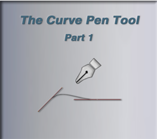
Note, I have just updated my Blender to the 4.4 version, before I started this project. This is the latest update, for the Blender application at this time.
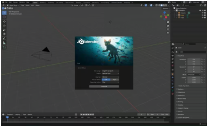
Setting Up for the Project
You will only find this Curve Pen Tool, if you have added some sort of Curve, in Object mode. Do this before entering Edit mode. If you have something like the cube, and brought that into edit mode, you will not even see this Curve Pen Tool in the tool box.
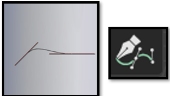
We are going to start off in Orthographic Front View. In Object Mode. You may want to move the red line of the floor for the curve down a bit, so we can have a starting point for the project. In this project we will be making a coffee cup.
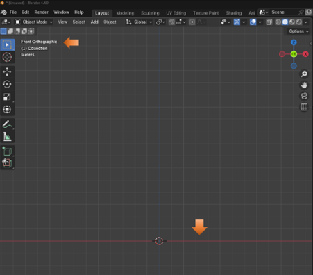
Make sure you have the Extra Curve Objects, enabled in the Preference Menu. You can find Preference in the Edit Top Menu Button.
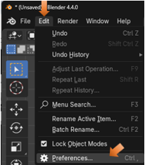
Click on the Add-Ons in the panel on the left-hand side, and then find and check, Extra Curve Objects, from the list.
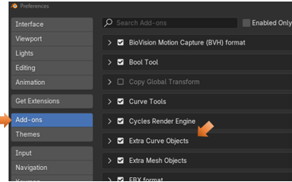
Adding a Point in Object mode
We want to get rid of the cube that is sitting there, so just hit the X key and delete it. Now we want to add a Point. Not a curve, but a point. However, this point is different because it thinks of itself as a starting point of a Curve, and is found inside of the Curve menu. So, for that we go to the Add menu, go to Curve, and then come down to Simple, you will find the point in the Simple menu.
Add-Curve-Simple-Point
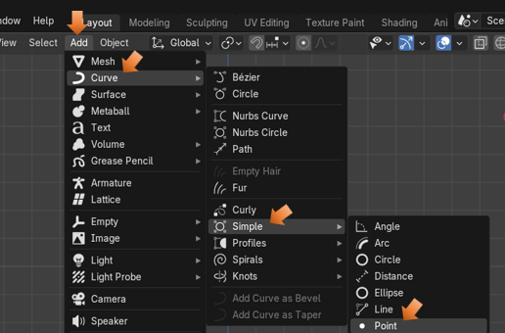
Adding this point will throw you immediately into Edit Mode. And since the point was drawn from the Curve menu, it also gave you all of the tools that a normal curve will give you. You should see that your point came in exactly where the cursor was located at the center of the blue and red grid lines.
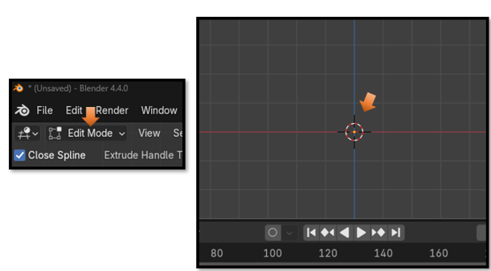
The Last Operation Box
As soon as you reach the edit mode with your point, you will have access to the Last Operation Box. It will say Simple Curve, because this is your last operation. A creation of a point, even though this action was done in Object mode. This Point is the simplest of all curves.
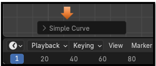
Open up that Simple Curve Last Operation dialog box to make the following changes
3D Mode
We want to make sure that we have 3 things checked in this area.
Bezier
3D
Vector
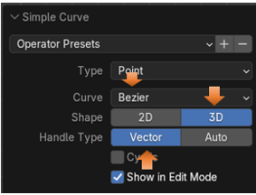
The Curve Pen Tool
Next, we want to grab the Curve Pen Tool from the tool box on the left side of the View Port.
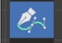
Now all we have to do to create our first curve control is to click, where on the object that we want that control to be. If you want things connecting, it is best to start making this control, where the cursor is, even though we already put a point there from Object mode. Then create this next control on the floor right next to it by, as I said, just clicking.
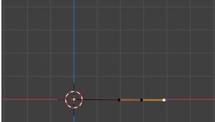
Warning! If your handles seem to be glued to the floor and cannot move, it is because you are still in 2D mode, you will not be able to move around freely until you set it into 3D mode.
Now you can select one of the points on the handle of that control and move the curve around.
Now click on the right handle point, and hold down the shift key, the shift key will enable us to get a sharp corner here instead of a curve. So, it sort of breaks the right handle off, and veers the line of our profile off from a sharp corner point.
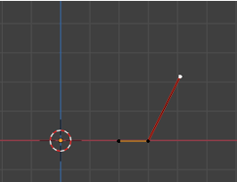
Now click a single point where you want the top of the cup to be. If your control came in with a yellow color when creating this top point, then just hit the V key again and change to control to be Aligned. Then it should be this reddish color.
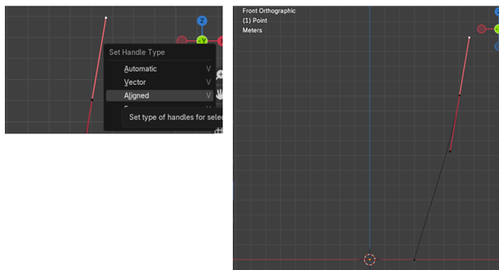
Creating a Point Inside of any Segment
While we are using this Curve Pen tool, we are able to create a point inside of a section, before the Curve Pen tool was introduced, this was not quite as easy as it is to do now.
Now with the Curve Pen Tool, all we need to do is to hover over the section that we want to create our new control, and hold down the Ctrl key and Click.
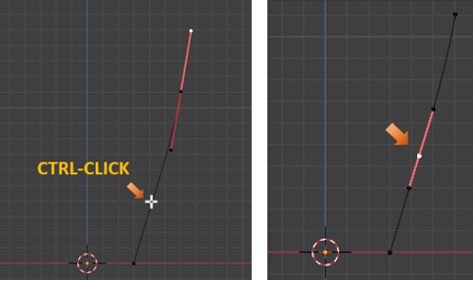
Now as long as we are still our 3D mode, this setting should not have changed unless you did something to it, we can click, hold, and drag and move this point around, or pull on one of the handles to reposition the curve into something more desirable for the cup.
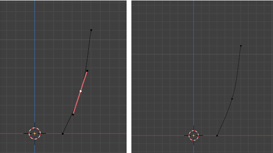
I tugged on that top point and made my cup taller a bit, and then I used the GG key to reposition the control in the middle of the segment again. I also hit the V key to soften that mid-point curve just a bit. If you start tugging on a handle it will go back to being Aligned, and you will have to change the Type of the Handle again, to make it Automatic.
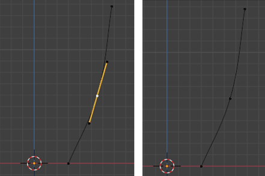
Just move points around to create a smooth transition
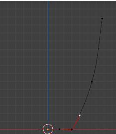
Creating the Lip at the top of the Cup
We need to activate that top point on the curve, to tell Blender that we want to work on that section and add a new segment there.
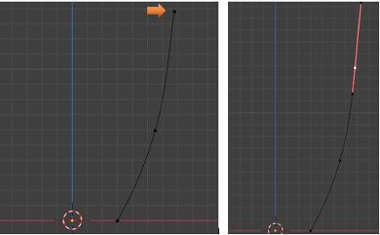
The length of this handle at the top won’t matter a whole lot, but it does make it easier to make the lip. But we will be changing and working on this length of this control’s top handle, later so don’t stress about it.
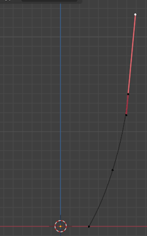
Now take your mouse and click once in this area here, fairly close to that other control point, but slightly, straight to the left. See how by making the handle on top longer, and then just by making a single click beside the mid-point of the first control, we were able to create that type of a lip curve shape for the cup.
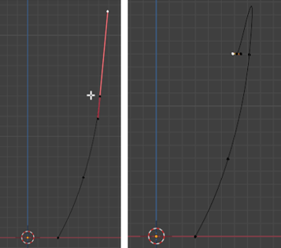
Tug on this left handle, slightly to the left, then just make a click below it.
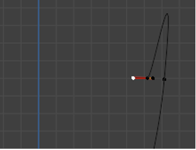
So, by clicking below this, we kind of created this bump shape here.
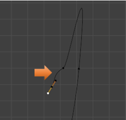
Now click on this control point at the top here to take a look at it. If we select that top handle point and shorten this handle, we can start to shape the lip of the cup into something that we actually want. But it will mess with the curve underneath of it, and there really is a better way.
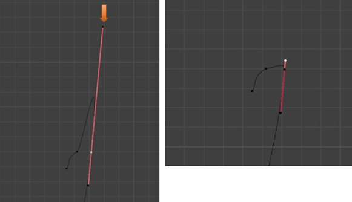
So, select that top point like this, and move it down while holding the Ctrl key, this locks the angle of this drag down and the curve under neath of it is not interfered with. You actually have to start the drag, before you can hit the ctrl key. It is rather ridged, but you can play with the top handle point, and the middle control point, and get a pretty good lip, while maintaining the shape of the curve, below the control.
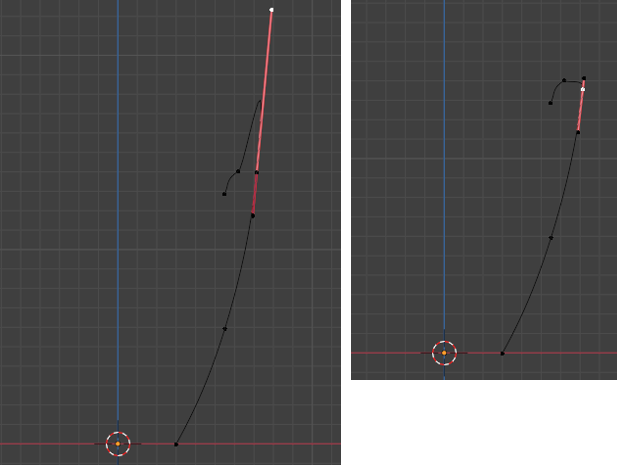
Creating the Inside of the Cup
You need to come to this point here, with the Curve Pen Tool selected, to activate it.
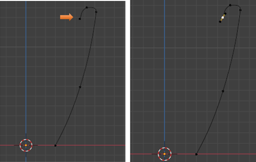
Click about here with the Curve Pen Tool. Click, hold and drag.
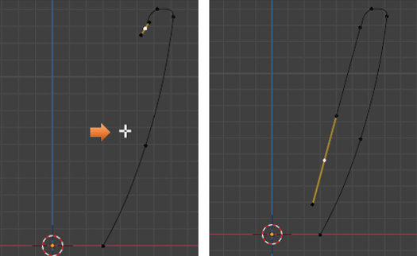
Then click, hold and drag straight across here to make the inner bottom of the cup. If you don’t do the drag, directly after the click to add the point, Blender will make that curve the way it wants it to be, and it will not be flat on the floor. So, remember to hold and drag the click straight across, to get this flat shape.
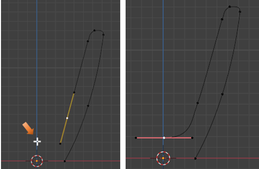
You may want to move some things around to get more smoothness out of Curve. Remember, a GG move will move the point on the segment line itself.
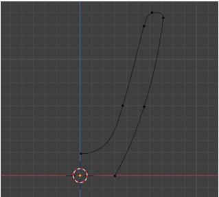
Making a Segment
If you go into Object mode, or you may notice in Edit mode, (but it is more difficult to see) and you see that for some reason that your curve has points that are supposed to be connected but are not, you will need to connect these points by creating a segment. You may get this section disconnected, if you did not make your first control with the Curve Pen tool, over that Point that you created in Object mode, and just started to create the shape from the area beside it.
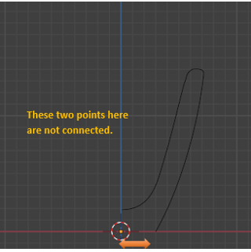
To fix this we want to shift- select both points.
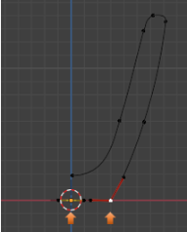
Go to the top menu, Select Control Points, then scroll down to find Make Segment.
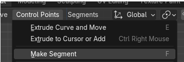
Now if you go into Object mode, we can see that we do indeed have a connection made between these two points.
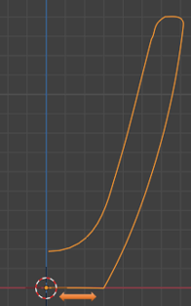
Take it back into Edit mode.
Mixing the Old Method with the New Method
Sometimes in creating the curve, you may find that the old methods for moving the curve may work better than using the Curve Pen tool for these movements. But it is all up to you. You can use the shortcut of G and it will still move your point. Once you start to make your movement with the G hotkey, you can initiate the X key and constrain that movement to just the X axis.
Just move things around with the G hot key, or Move Tool, until you get the profile to your liking for the right side of your cup.
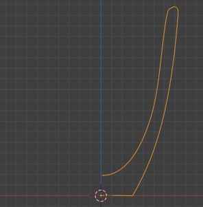
Widening our Cup
Grab all of these points here and widen the base of the cup.
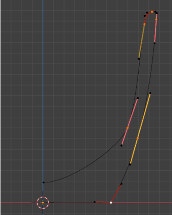
Placing the bottom Precisely on the Floor
We want to select this bottom corner point here.
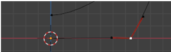
Now hit the N key to bring up that Panel inside of the right side of the viewport. Make sure you are on the Item tab, and then put 0 in the setting for the Z Axis. The Z setting at 0 will place this corner point precisely on the floor. No ambiguity here.
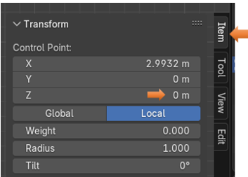
Creating the Bottom Lip for the Cup
Now we want to go to that bottom segment line of the curve. Hover over this line, and while holding down the Ctrl Key, we want to click on it two times, to make two more controls inside of that section.
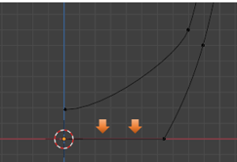
Warning, be careful not to click too close to another point, as the Ctrl key is also used to delete points, and that is what you will do, you will delete a point that you want, instead of adding one.
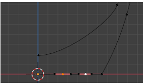
Now we also want to add that point that is inside of the cursor icon to our selection. So, we want to select every point on that bottom part of the cup, except for the outside right corner point. So, shift-click on this cursor point to add it to the selection. You will know it is added when you see its handles show up on it.
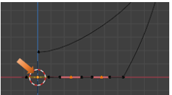
Now what we want to do is to hit the G key to start the movement, and then hit the Z key to constrain this movement to move flat across the floor. Then move this whole section up a bit; what we are trying to do, is to create a sort of bottom lip around the outside of the cup. That is why that right point, was left unselected.
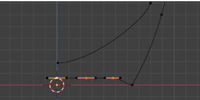
Now we want to change that corner point to be more curved. To do that we will add another point on the curve section above that point. So, hover over this section and hit the ctrl key, and then click with the Curve Pen Tool, to add the point.
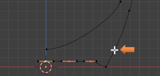
Here is that new control
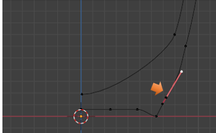
Now grab this bottom corner point again, you might want to pull those handles out a bit.
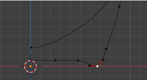
Now what we are trying to do is to produce a more rounded shape. Select the center corner point again. Hit the G key and then X to slide it along the floor.
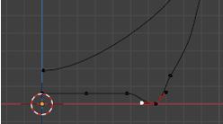
The handles on that bottom point are red, which means right now they are dependent upon one another. What we are trying to do is to get them into a better alignment. And what we really want, is for the top handle on this point to align with the handle that is shooting off to the left of the center control point. To do this we need to: First select the handle, which is in the alignment that we are going for. In this case it will be that handle, which is shooting off to the left.
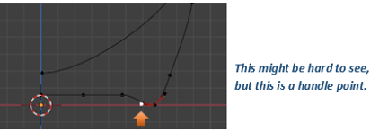
Now press the V key, and set that one to Aligned.
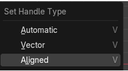
Then come to the Second one and select it to Aligned to follow the first handle’s lead.
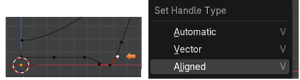
When you set this second one, it should drop in a straight line with the first handle point.
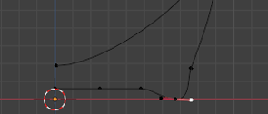
This is going to be enough for this week, next week, we will start working on the handle.
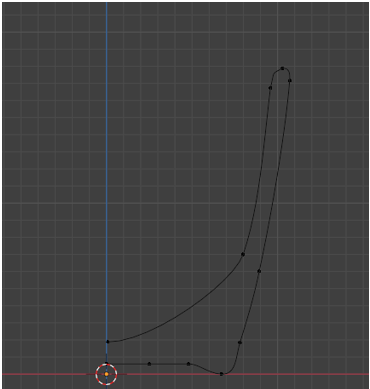